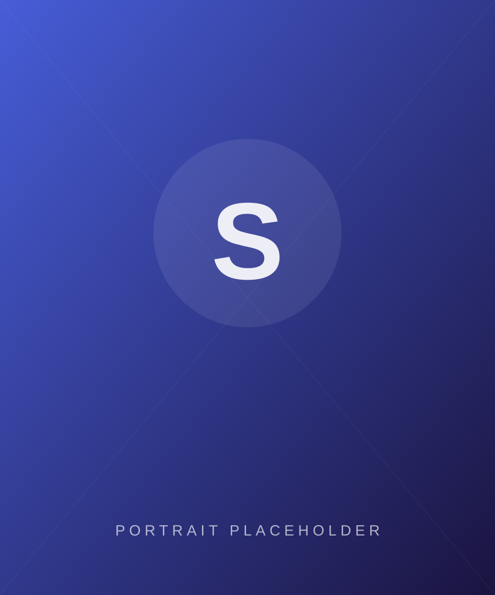

Design that starts with a question. Not a template.
I’m Sal — a graphic designer, web designer, art director, and UI/UX designer based on making digital and print work feel considered, not generic. I move between disciplines because the best answer to a problem isn’t always a screen.

7+
Years in the field
40+
Projects shipped
12
Industries worked with
5
Disciplines, one process
Where I’ve worked
2023 — Now
Product · Brand
Senior Product & Brand Designer
Freelance / Independent Studio
2021 — 2023
Art Direction
Art Director
Aether Collective
2019 — 2021
UI · UX
UI/UX Designer
Pulse Creative Studio
2017 — 2019
Print · Editorial
Graphic Designer
Kite Magazine
What I work with
Design
Figma, Adobe Illustrator, Photoshop, InDesign
Motion
After Effects, Cinema 4D, GSAP, Protopie
Build
HTML, CSS, JavaScript, design systems & tokens